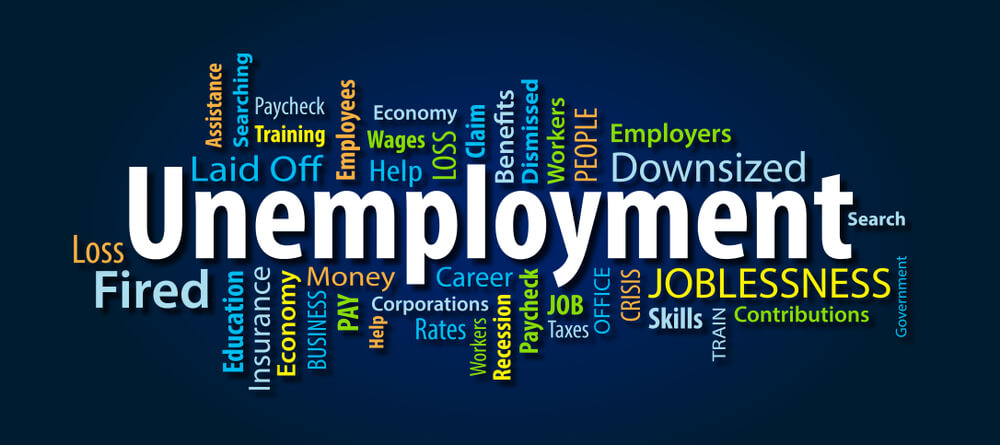

.png)
.png)
Daniel Vincent | 17 Nov, 2024

In June 2023, President Bola Tinubu made a bold move by removing Nigeria's long-standing fuel subsidy, a decision that was met with both support and widespread criticism.
While the government argued that the subsidy was economically unsustainable, the immediate aftermath of this decision has led to significant hardships for many Nigerians.
A fuel subsidy is a government financial support mechanism that reduces the price of fuel for consumers, making it more affordable.
In Nigeria, this subsidy has historically helped keep gasoline prices low, but it has also been associated with corruption and inefficiency.
A fuel subsidy is a financial assistance provided by the government to lower the price of fuel for consumers.
This can take the form of direct payments to fuel suppliers or price controls that keep fuel prices below market levels.
The primary aim of fuel subsidies is to make energy more affordable for the population, especially in developing countries where fuel costs can significantly impact the cost of living.
Nigeria has relied on fuel subsidies for decades to keep gasoline prices low, despite being an oil-producing nation.
The government has funded these subsidies to alleviate the financial burden on citizens, but this has often led to budgetary constraints and allegations of corruption.
The removal of the subsidy resulted in a sharp increase in fuel prices, with reports indicating that costs surged from approximately $0.40(656.95 Naira) to $0.86(1,412 Naira) per liter.
This sudden hike led to panic buying and long queues at petrol stations as citizens scrambled to fill their tanks before prices rose further.
The increase in fuel prices has had a cascading effect on the cost of living.
Transportation costs have skyrocketed, affecting daily commutes and the prices of goods and services.
As the fuel prices rose higher so did prices of goods as distribution of goods requires vehicles that consume fuel.
Many citizens have reported that their salaries have not kept pace with these rising costs, leading to a decrease in their purchasing power.
Nigeria is currently experiencing an inflation rate at an 18-year high, exacerbated by the subsidy removal.
The combination of rising fuel prices and stagnant wages has pushed many families into deeper poverty, with the number of working poor increasing significantly.
The decision to remove the subsidy has sparked protests and unrest across the country.
Labor unions have threatened strikes, and many citizens feel that the government has not adequately communicated the benefits of this policy change or provided a safety net for those affected.
The removal of the subsidy disproportionately affects low-income families who rely on public transportation.
Many have reported being unable to afford the increased transport fares, leading to difficulties in commuting to work and accessing essential services.
Small businesses, particularly those reliant on transportation, have been hit hard.
For instance, taxi drivers have reported halting operations due to unsustainable costs, leading to job losses and increased unemployment in the sector.
Critics argue that the government was unprepared for the fallout from the subsidy removal.
There were no immediate measures in place to cushion the impact on the most vulnerable populations, leading to widespread dissatisfaction.
While the removal of the subsidy could potentially free up funds for investment in infrastructure and social programs, the government must ensure that these funds are used effectively.
There is a call for transparency and accountability in how the savings from the subsidy are redirected to benefit the poor.
Experts suggest that the government should implement cash transfer programs and other social safety nets to support those most affected by the subsidy removal.
This could help mitigate the immediate hardships and foster public trust in the government's economic policies.
President Tinubu's handling of the subsidy removal has undoubtedly caused significant hardship for many Nigerians.
While the long-term benefits of such a policy may be argued, the immediate consequences have led to increased poverty, public unrest, and a growing sense of discontent among the populace.
Moving forward, it is crucial for the government to address these challenges with effective communication, transparency, and targeted support for those most affected.